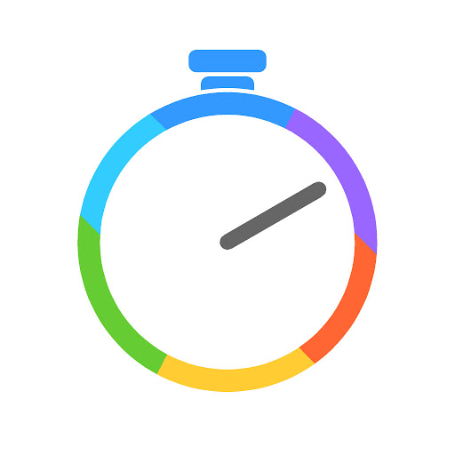

<div class="ui secondary pointing menu">
  
  <a class="item" href="/#/dashboard"> Sprintr </a>
  <div class="right menu">
      <a class="ui item" href="/#/newgame" > Create New Game </a>
      <a class="ui item"  href="/#/findgame" > Join A Game </a>
      <a class="ui item"  ng-click='logout()' > Log Out </a>
  </div>
</div>
